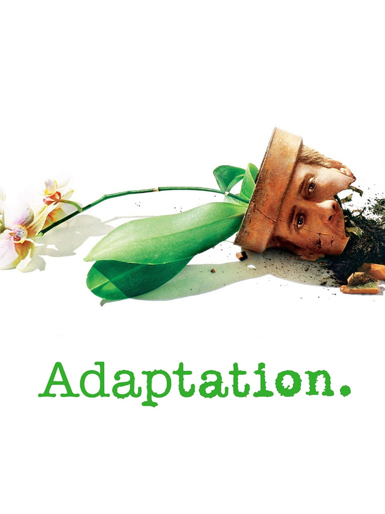

TÍTULO
Charlie Kaufman, un guionista de Los Ángeles, vive un periodo de crisis creativa, todo lo contrario que su hermano gemelo Donald. Charlie escribe tal como vive: con gran dificultad y lleno de inseguridades, mientras que Donald vive tal como escribe: con dejadez. Por su parte, Susan escribe sobre la vida, pero es incapaz de vivirla. Por el contrario, la intensa y aventurera vida de John es digna de una novela.
2002-Comedia dramática